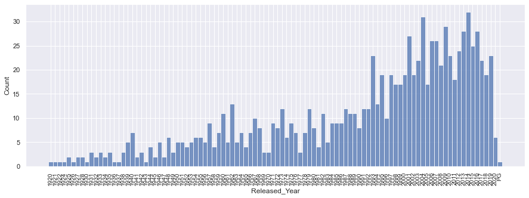
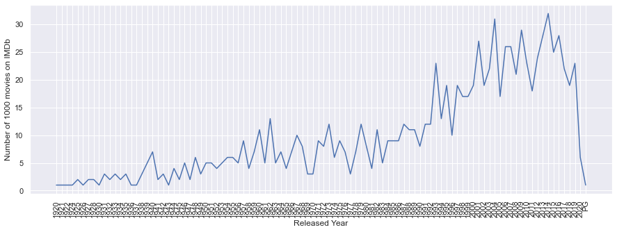
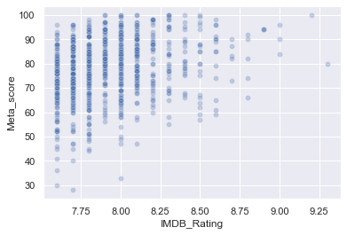
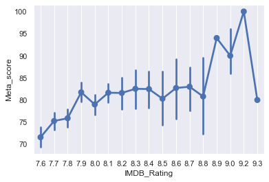
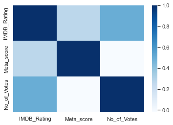
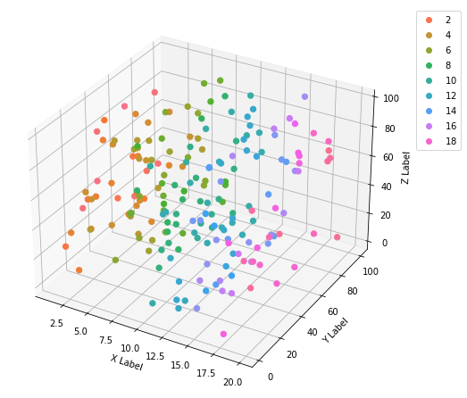
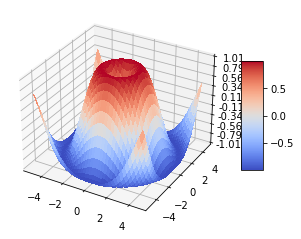

Multivariate Visualizations#
from matplotlib import pyplot as plt
import seaborn as sns
sns.set_theme()
import pandas as pd
data = pd.read_csv('../data/imdb_top_1000.csv')
Temporal Data: Line Plot#
plt.figure(figsize=(15, 5))
data = data.sort_values('Released_Year')
sns.histplot(data['Released_Year']);
plt.xticks(rotation=90, fontsize=10);

plt.figure(figsize=(15, 5));
line = data['Released_Year'].value_counts().sort_index();
sns.lineplot(x=line.index, y=line.values);
plt.xticks(rotation=90);
plt.xlabel('Released Year');
plt.ylabel('Number of 1000 movies on IMDb');

Scatter Plot#
sns.scatterplot(x=data['IMDB_Rating'], y=data['Meta_score'], alpha=0.3);

Error Plot#
sns.pointplot(x=data['IMDB_Rating'], y=data['Meta_score']);
plt.grid();

Heatmap#
sns.heatmap(data.corr(), cmap='Blues');

2-D#
3-D#
import re, seaborn as sns
import numpy as np
from matplotlib import pyplot as plt
from mpl_toolkits.mplot3d import Axes3D
from matplotlib.colors import ListedColormap
# generate data
n = 200
x = np.random.uniform(1, 20, size=n)
y = np.random.uniform(1, 100, size=n)
z = np.random.uniform(1, 100, size=n)
# axes instance
fig = plt.figure(figsize=(6,6))
ax = Axes3D(fig, auto_add_to_figure=False)
fig.add_axes(ax)
# get colormap from seaborn
cmap = ListedColormap(sns.color_palette("husl", 256).as_hex())
# plot
sc = ax.scatter(x, y, z, s=40, c=x, marker='o', cmap=cmap, alpha=1)
ax.set_xlabel('X Label')
ax.set_ylabel('Y Label')
ax.set_zlabel('Z Label')
# legend
plt.legend(*sc.legend_elements(), bbox_to_anchor=(1.05, 1), loc=2)
# save
plt.savefig("scatter_hue", bbox_inches='tight')

help(ax.plot_trisurf)
Help on method plot_trisurf in module mpl_toolkits.mplot3d.axes3d:
plot_trisurf(*args, color=None, norm=None, vmin=None, vmax=None, lightsource=None, **kwargs) method of matplotlib.axes._subplots.Axes3DSubplot instance
Plot a triangulated surface.
The (optional) triangulation can be specified in one of two ways;
either::
plot_trisurf(triangulation, ...)
where triangulation is a `~matplotlib.tri.Triangulation` object, or::
plot_trisurf(X, Y, ...)
plot_trisurf(X, Y, triangles, ...)
plot_trisurf(X, Y, triangles=triangles, ...)
in which case a Triangulation object will be created. See
`.Triangulation` for a explanation of these possibilities.
The remaining arguments are::
plot_trisurf(..., Z)
where *Z* is the array of values to contour, one per point
in the triangulation.
Parameters
----------
X, Y, Z : array-like
Data values as 1D arrays.
color
Color of the surface patches.
cmap
A colormap for the surface patches.
norm : Normalize
An instance of Normalize to map values to colors.
vmin, vmax : float, default: None
Minimum and maximum value to map.
shade : bool, default: True
Whether to shade the facecolors. Shading is always disabled when
*cmap* is specified.
lightsource : `~matplotlib.colors.LightSource`
The lightsource to use when *shade* is True.
**kwargs
All other arguments are passed on to
:class:`~mpl_toolkits.mplot3d.art3d.Poly3DCollection`
Examples
--------
.. plot:: gallery/mplot3d/trisurf3d.py
.. plot:: gallery/mplot3d/trisurf3d_2.py
url = 'https://raw.githubusercontent.com/holtzy/The-Python-Graph-Gallery/master/static/data/volcano.csv'
data = pd.read_csv(url)
# Transform it to a long format
df=data.unstack().reset_index()
df.columns=["X","Y","Z"]
df['X']=pd.Categorical(df['X'])
df['X']=df['X'].cat.codes
fig = plt.figure()
ax = fig.gca(projection='3d')
surf=ax.plot_trisurf(df['Y'], df['X'], df['Z'], cmap=plt.cm.viridis, linewidth=0.2)
fig.colorbar( surf, shrink=0.5, aspect=5)
plt.show()
/var/folders/l9/y8y3rmys2sl93tzzph3dl7jw0000gr/T/ipykernel_72456/2735983038.py:12: MatplotlibDeprecationWarning: Calling gca() with keyword arguments was deprecated in Matplotlib 3.4. Starting two minor releases later, gca() will take no keyword arguments. The gca() function should only be used to get the current axes, or if no axes exist, create new axes with default keyword arguments. To create a new axes with non-default arguments, use plt.axes() or plt.subplot().
ax = fig.gca(projection='3d')
import matplotlib.pyplot as plt
from matplotlib import cm
from matplotlib.ticker import LinearLocator
import numpy as np
fig, ax = plt.subplots(subplot_kw={"projection": "3d"})
# Make data.
X = np.arange(-5, 5, 0.25)
Y = np.arange(-5, 5, 0.25)
X, Y = np.meshgrid(X, Y)
R = np.sqrt(X**2 + Y**2)
Z = np.sin(R)
# Plot the surface.
surf = ax.plot_surface(X, Y, Z, cmap=cm.coolwarm,
linewidth=0, antialiased=False)
# Customize the z axis.
ax.set_zlim(-1.01, 1.01)
ax.zaxis.set_major_locator(LinearLocator(10))
# A StrMethodFormatter is used automatically
ax.zaxis.set_major_formatter('{x:.02f}')
# Add a color bar which maps values to colors.
fig.colorbar(surf, shrink=0.5, aspect=5)
plt.show()

4-D#
5-D#
https://www.kaggle.com/code/themlphdstudent/cheat-sheet-seaborn-charts